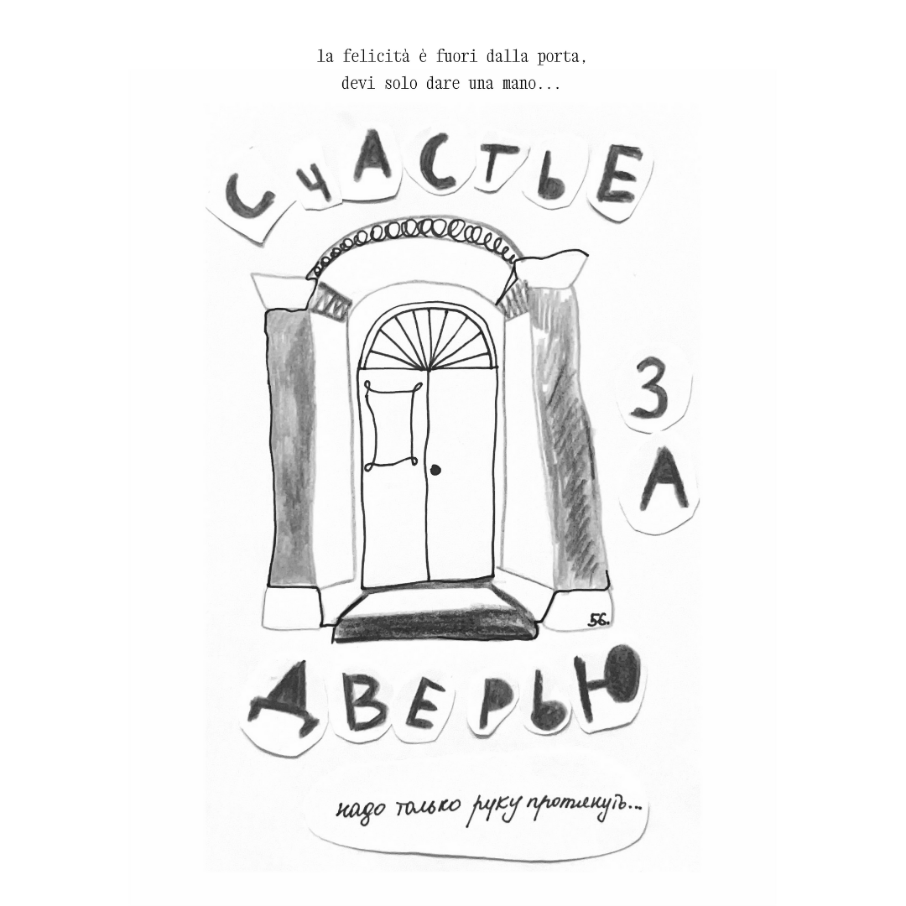

зачем мне думать о себе
perché pensare a me
why think of myself

зачем мне думать о себе, когда я думаю о нас
когда смотрю в твои глаза
я словно передаю пас
всем тем, кто в них всегда смотрел
и до меня
и после нас
скажи мне лучше, сколько дней
я потерял, когда погас
я слышу вас, я слышу вальс
но не со мной и не сейчас
огни горят, а я погас
но слышу вальс
perché pensare a me, quando penso a noi?
guardando nei tuoi occhi sembra
che passi il testimone
a tutti quelli che vi hanno guardato
prima di me
e dopo di noi.
dimmi piuttosto quanti giorni
ho perso quando mi sono spento
vi sento, sento il valzer
ma non con me e non adesso
le luci ardono, io sono spento,
ma sento il valzer
why think of myself when I think of us?
looking into your eyes it feels
like I pass the baton
to everyone who looked in them
before me
and after us
better tell me how many days I lost when I
went dark.
I hear you all, I hear the waltz but not with
me and not right now
the lights are burning, I am out,
yet I hear the waltz.